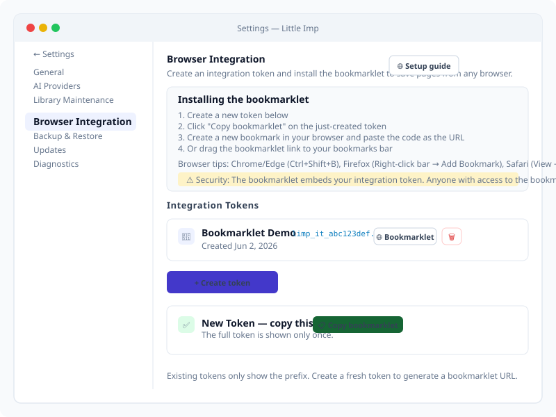
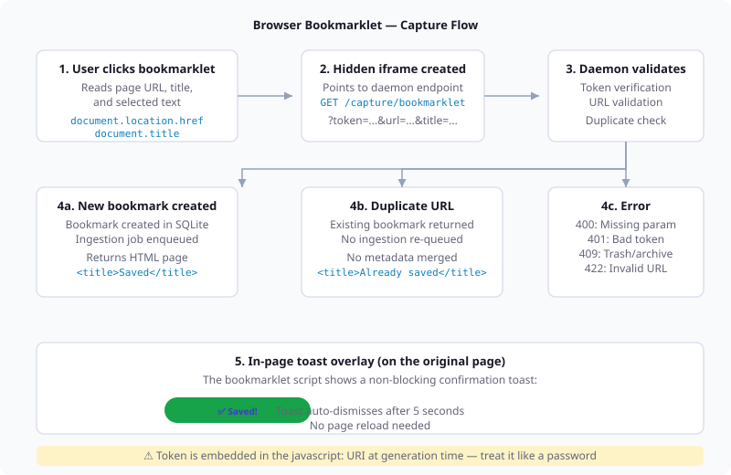
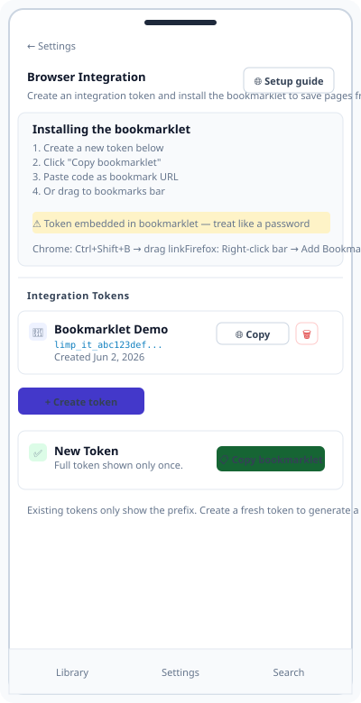

Grimoire Task Report
TASK-126: Browser Bookmarklet Client

Before
The only way to save a bookmark required opening the Little Imp app (add dialog, paste URL, or import). There was no browser-based one-click save mechanism. Integration tokens existed but were only used for the MCP server and POST /capture API endpoint — no bookmarklet client or Settings UI for browser integration existed.
Problem
Bookmark managers live or die by how easily users can save content. Without a browser bookmarklet, every save required context-switching to the app. This was the single highest-impact UX gap for a bookmark manager.
Changes Added
- Created a self-contained minified bookmarklet template that reads page URL, title, and selected text, shows an in-page toast overlay, and uses a hidden iframe to POST to the daemon via
GET /capture/bookmarklet(iframe avoids CORS) - Added
GET /capture/bookmarkletdaemon endpoint with query-param token authentication, URL validation, duplicate detection, and HTML responses (success/error/info pages rendered inside the iframe) - Refactored the existing
POST /capturehandler to share capture logic with the bookmarklet endpoint via a unifieddoCapture()helper (eliminated code duplication) - Added "Browser Integration" section to Settings UI: token creation/revocation, expanded setup guide (Chrome, Firefox, Safari, Edge instructions), one-click bookmarklet URL generation for newly-created tokens
- Added
generateBookmarkletUrl()insrc/lib/bookmarklet.tswith placeholder-based token/daemon URL injection - Added API client methods for integration token management:
listIntegrationTokens,createIntegrationToken,revokeIntegrationToken,rotateIntegrationToken - Registered the bookmarklet endpoint in the API contract and regenerated all API docs
- Documented the bookmarklet in README.md ("Browser bookmarklet" section) and
docs/overview.md
Result
Users can now save any web page to Little Imp in one click without opening the app. The flow: go to Settings → Browser Integration → create a token → click "Copy bookmarklet" → paste as a browser bookmark URL → click the bookmarklet on any page to save it. A toast overlay confirms success, and the page is queued for ingestion like any other capture.


Verification
npm run type-check— frontend + daemon passnpm run lint— 0 errors, 8 pre-existing warningsnpx vitest run— 287 tests across 33 files, all passingnpm run test:daemon— 465 tests (6 new bookmarklet integration tests), all passingnpm run docs:api:check— API docs up to date- 6 new integration tests for
GET /capture/bookmarklet: missing token (400), missing URL (400), invalid token (401), private URL (422), successful capture (201 with DB persistence), duplicate URL (200) - 11 new unit tests for
generateBookmarkletUrl(): URI structure, token embedding, daemon URL, special characters, IIFE validation
Links
src/lib/bookmarklet.ts— Bookmarklet URL generatorsrc/bookmarklet/bookmarklet.ts— Human-readable bookmarklet sourcedaemon/src/routes/capture.ts—GET /capture/bookmarkletendpoint +doCapturesrc/pages/Settings.tsx— Browser Integration section UIsrc/lib/api.ts— Integration token API client methodsdaemon/src/api/contract.ts— API contract with bookmarklet endpointdaemon/src/test/integration/capture.test.ts— Bookmarklet integration testsREADME.md— "Browser bookmarklet" section
Implementation Notes
The bookmarklet uses a hidden iframe (not XMLHttpRequest or fetch) to communicate with the daemon because CORS preflight would fail — the bookmarklet runs on arbitrary web pages while the daemon is on 127.0.0.1:3210. The iframe loads an HTML page from the daemon, which renders silently. The daemon returns HTML pages with status codes that the iframe doesn't expose to the host page (by design — the host page cannot read the iframe content due to cross-origin restrictions). The toast overlay provides the only user feedback.
Token authentication uses a query parameter (?token=...) rather than the Authorization header because the iframe src cannot set headers. The token is embedded in the bookmarklet javascript: URI at generation time. Security model: treat the bookmarklet like a password — it grants capture access to the daemon.
The doCapture() refactoring eliminated ~60 lines of duplicated create-bookmark logic between the POST handler and the GET bookmarklet handler. Category resolution uses a lazy callback to avoid side effects when a duplicate URL is detected.
Files Changed
daemon/src/routes/capture.ts—doCapturehelper,GET /capture/bookmarkletendpoint, HTML response helpersdaemon/src/api/types.ts— Integration token DTO typesdaemon/src/api/contract.ts— Bookmarklet endpoint definitiondaemon/src/test/integration/capture.test.ts— 6 new bookmarklet integration testssrc/lib/bookmarklet.ts—generateBookmarkletUrlwith minified templatesrc/lib/bookmarklet.test.ts— 11 new unit testssrc/lib/api.ts— Integration token API client methodssrc/pages/Settings.tsx— Browser Integration sectionsrc/pages/Settings.test.tsx— Mock updates for BrowserIntegrationscripts/api-docs-generator.test.ts— Updated test expectations for bookmarklet endpointREADME.md— Browser bookmarklet documentationdocs/overview.md— Bookmarklet capture mentionAPI.md,docs/api-contract.json,docs/openapi.json— Regenerated docs
Review Findings
A separate code review was conducted after implementation. Key findings:
- Critical:
resolveCategoryId()was running before the duplicate check, causing side-effect category creation even for existing bookmarks — fixed by using a deferred callback - Structural:
doCaptureandPOST /capturehad diverging creation logic — unified by adding tags/notes support todoCapture - Security: Token embedded in
javascript:URI — documented in README and Settings UI - UX: Bookmarklet button on existing token rows was confusing — now opens the create-token dialog
- All issues were fixed before the task was marked done.